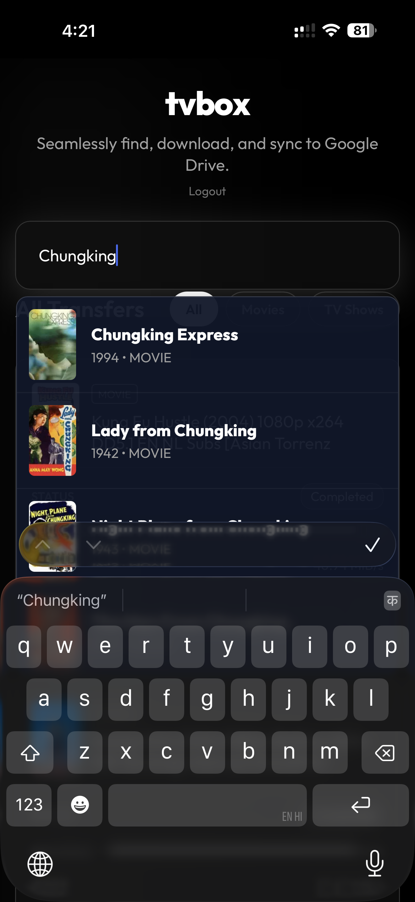
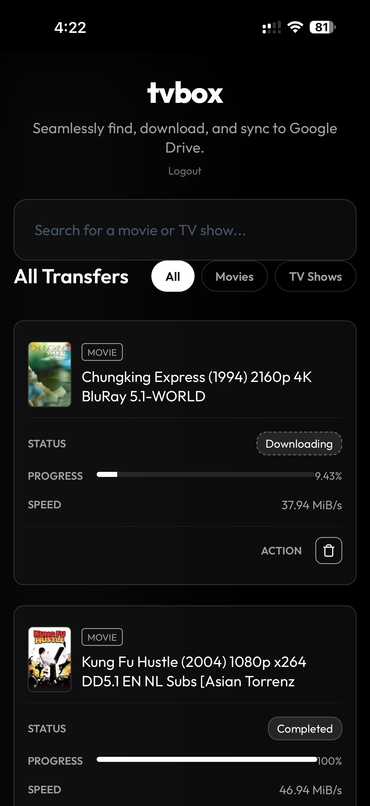
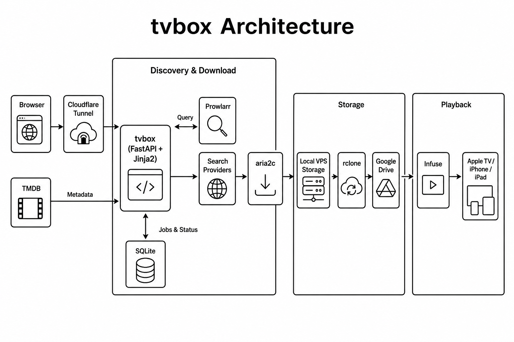

Local
Try tvbox on your own computer with Docker. No VPS or domain required.
Open source · Self-hosted
Search for a movie or TV show, manage downloads from one dashboard, move files to Google Drive, and watch them through Infuse.
Runs locally or on a VPS · Docker Compose · ~1–2 hour setup



You search for a movie and it is not on any streaming platform in your country. Google says it is on MUBI or Amazon Prime, but the link opens to “unavailable in your region.”
tvbox brings the workflow into one place: search → download → Google Drive → Infuse.

Try tvbox on your own computer with Docker. No VPS or domain required.
Run downloads 24×7 on a server and access tvbox remotely when you need to.
Clone the repo, copy .env.example to .env, and follow the
full walkthrough.